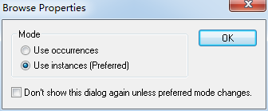
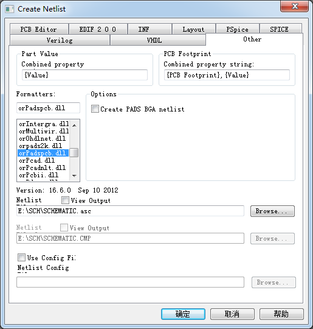
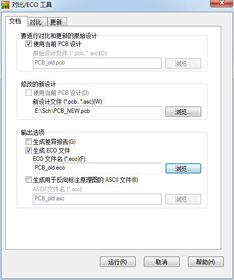
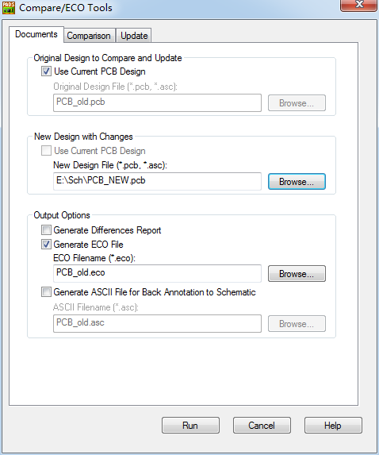
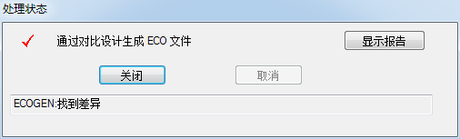
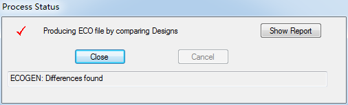

20160227
OrCAD to PADS Layout
1. OrCAD修改元件 PCB Footprint 属性
在项目管理窗口中选中要修改的项目文件
执行 Edit / Browse / Parts /
弹出 Browse Properties 窗口
(默认选择 Use instances (Preferred))

点击OK
出现 BROWSE Parts窗口
选中所有元件
执行 Edit / Properties
弹出 Browse Spreadsheet窗口
找到 PCB Footprint 属性，并将其修改为PADS Layout的PCB封装名
点击OK
2. OrCAD导出网表
在项目管理窗口中选中要导出的项目文件
执行 Tools / Create Netlist
弹出Create Netlist 窗口
切换到 Other选项卡

Part Value Combined property
{Value}
PCB Footprint Combined property string
{PCB Footprint},{Value}
在Formatters列表框中选择 orPadspcb.dll or orpads2k
勾选 View Output
点击确定
生成.asc网表文件
3. PADS Layout导入.asc网表文件
File / Import
ORCAD原理图更新到PADS的方法
在ORCAD中对电路原理图进行Modify，通常需要Update相应的PCB Layout
将OrCAD中所做的更改输出到已有的PADS Layout布线中，该项操作即为向前注释或正向注释
具体方法:
原理图文件 Schematic_OLD.DSN，及对应的PCB文件 PCB_OLD.pcb
1.在OrCAD中打开原理图文件 Schematic_OLD.DSN，将修改后的原理图命名为 Schematic_NEW.DSN，
并输出PADS格式的网表 Schematic_NEW.asc文件。
2.在PADS中新建一个设计，执行 File / Import 导入 Schematic_NEW.asc，保存此PCB文件为 PCB_NEW.pcb
3.在PCB Layout中打开 PCB_OLD.pcb，执行 Tools / Compare/ECO... 弹出比对/ECO窗口


在 要进行对比和更新的原始设计(Original Design to Compare and Update)
勾选 使用当前PCB设计(Use Current PCB Design)
意思是把当前文件(PCB_OLD.pcb)做为原始的比对文件
修改的新设计(New Design With Changes)
新设计文件(New Design File) 浏览选择 PCB_NEW.pcb
输出选项Output Options
勾选 生成ECO文件 Generate ECO file
设置好ECO文件的路径
eco文件默认保存在PADS的安装目录(D:\ED\PADS\PADSProjects)下
点击RUN,生成ECO文件


4.重新打开原有的PCB_OLD.pcb文件，选择导入 PCB_old.eco 文件
利用PADS自带的转换工具将OrCAD原理图转换为PADS Logic
开始 / MentorGraphics SDD / PADS9.5 / Translators / PADS Schematic Translator